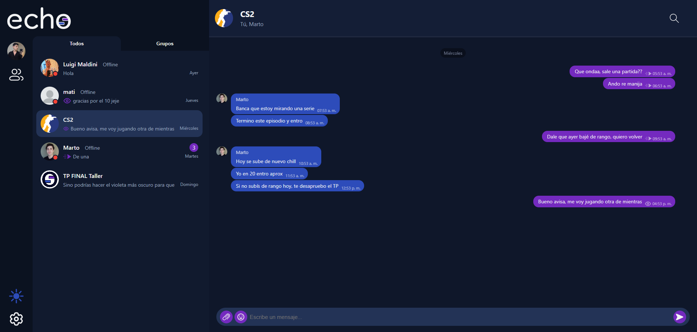
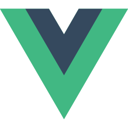

-
Elixir
-

Vue
-
Docker
-
PostgreSQL
-
GCP
Visitar el sitio web
Aclaración: El host no está 24/7 andando, sino que se levanta con una request, por lo que la primera carga (en el login/register) puede tardar unos segundos.
Echo es una aplicación de mensajería en tiempo real que permite a los usuarios comunicarse mediante chats privados y grupales con una experiencia fluida tanto en escritorio como en dispositivos móviles.
El sistema gestiona sesiones activas de usuario, presencia online y sincronización instantánea de mensajes utilizando conexiones persistentes a través de WebSockets, ofreciendo envío de texto y adjuntos multimedia dentro de una interfaz moderna y responsiva.
Su arquitectura separa claramente frontend y backend, priorizando escalabilidad, manejo eficiente del estado y comunicación concurrente para mantener conversaciones actualizadas sin recargas ni interrupciones.
Echo utiliza la herramienta de Google Cloud Platform (GCP) para almacenar los archivos multimedia (imágenes, archivos, etc.)
En el README.md del repositorio de GitHub se pueden encontrar más detalles técnicos sobre la implementación, así como instrucciones para correr la aplicación localmente.
-
Código
El código no está disponible en este momento.
Por favor envíeme un email para darle acceso.
Gracias!